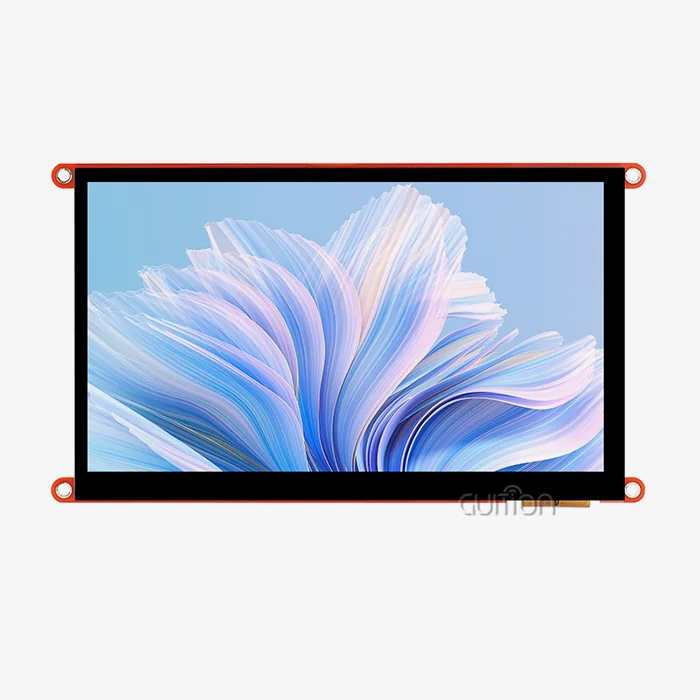

JC1060Q370C_I
Guition · Hmi human interface machine
JC1060Q370C_I is a 7" 1024x600 IPS Capacitive touch ESP32 display board by Guition based on the ArtInChip D12x with 16MB flash, 8MB PSRAM.
Features, ports & interfaces
- RGB parallel display
- Capacitive touch
- 8 MB PSRAM
- 16 MB flash
- microSD (TF) card slot – up to 32 GB, FAT32
- Speaker interface
- RTC
Specifications
| Parameter | Value | Source |
|---|---|---|
| Screen size | 7" | source |
| Resolution | 1024x600 | source |
| Panel | IPS | source |
| Shape | Rectangular | |
| Display interface | RGB | source |
| Display driver | JD9165 | source |
| Touch | Capacitive | source |
| MCU / SoC | D121BBV (ArtInChip) | source |
| MCU family | ArtInChip D12x | |
| CPU frequency | 400MHz | source |
| Flash | 16MB | source |
| PSRAM | 8MB | source |
| SRAM | 32K | source |
| Wi-Fi | No | source |
| Bluetooth | No | source |
| Category | HMI Display Module | |
| Active area | 164.86mm (L) × 99.96mm (W) | source |
| Audio | Yes | source |
| Brightness | 400 nits | source |
| Colors | 16-bit RGB 65K | source |
| Connectivity | WiFi, Bluetooth | source |
| Dimensions | 181.00mm (L) × 104.00mm (W) | source |
| Expansion / IO | Yes | source |
| Interface detail | RGB | |
| Memory | 32KB SRAM, 8MB PSRAM | source |
| ROM | 32K | source |
| RTC | Yes | source |
| SD / TF | FAT32, max 32GB MicroSD/TF | source |
| Software / dev support | RT-Thread | source |
| Speaker interface | Yes | source |
| Vendor | Guition |
Official links & documentation
Files
Offline copies are available on the interactive page.
- JC1060Q370_EN_1776241299150.pdf – original